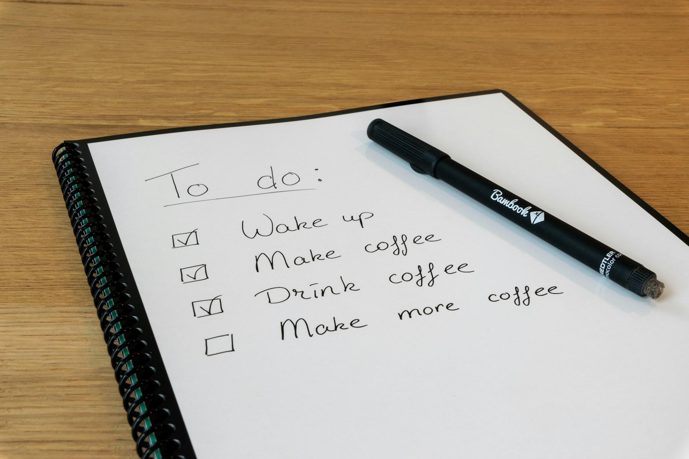
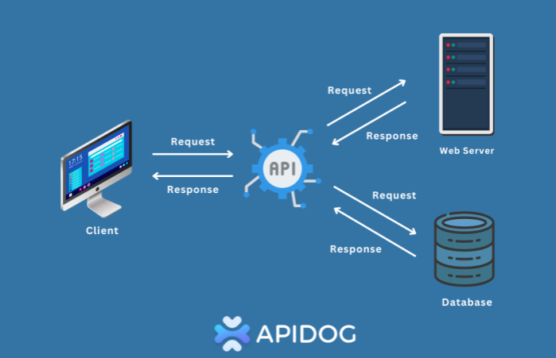

A modern, robust, and scalable high-performance e-commerce backend, built with .NET 9 and following the principles of Clean Architecture, CQRS, polyglot persistence (SQL Server + MongoDB), asynchronous messaging (RabbitMQ + MassTransit), distributed caching (Redis), and JWT-based authentication with policies.
GithubA task management application where users create an account, access a dashboard upon logging in, and register tasks. Users receive mobile notifications: one 5 minutes before a task's deadline and another when the time expires. Built using ASP.NET Core, C#, and Quartz.NET (currently migrating from BackgroundService), with RabbitMQ for messaging.
Github
A project I created to test implementations and some of the most widely used libraries in ASP.NET Core projects, with a focus on the back-end. This project is currently running in the cloud. For study purposes, I implemented a 3-layer architecture (using the Repository Pattern), CQRS, and the Mediator pattern within the controllers. This approach promotes a high degree of decoupling, which facilitates refactoring and makes it easier to implement fixes should any issues arise.
GithubI developed a Movie Catalog API using ASP.NET Core, implementing the Repository pattern and the Mediator pattern with CQRS to separate commands from queries. I employed Domain-Driven Design (DDD) to structure the project efficiently and used AutoMapper to simplify object mapping. Data persistence is handled via Dapper, connecting to a SQL Server database. The API also integrates ILogger for robust log management, ensuring scalability and maintainability. This project exemplifies a modern, solid architecture for web applications.
GithubDeveloped a Minimal API for vehicle registration in ASP.NET Core, using standard Repository and DDD (Domain-Driven Design). The application connects to a MySQL database via Docker and employment Entity Framework for data management. I implemented authorization and authentication with JWT Bearer allowing access control for Administrator and Editor roles. This project demonstrates a modern approach and security for building APIs.
GithubA simple project for learning how to integrate external services such as a user API containing user information and populating a SQL Server database by consuming that data.
Github